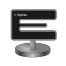

Nasqueron is a budding community of creative people, writers, developers and thinkers.
You'll find here like-minded people to connect to, hang out, and build projects.
We focus on free culture, ethics and to be a positive change. Our software is open source our datasources and content are licensed under CC-BY-SA or CC-BY license. We share values like respect, justice and equity.
We like experiments, originality and to discover new things.
We are Nasqueron.
In 2016, we've focused to build a great infrastructure. Servers, continuous integration, places to communicate, notifications, operations workflows.
We believe this infrastructure first provides a great added value to any project: everything is in place and polished.
The infrastructure is open and managed by the Operations special interest group. A configuration-as-code repository is used, so it's reliable, well documented and open source.
To communicate, we've deployed mailing lists, Etherpad, a forum, a wiki, IRC bots with a great glue notifications tooling.
To craft software, we've Phabricator and Jenkins instances. Did we tell you we've notifications sorted?
To host apps, we've a PaaS built on Docker. And an server dedicated to IRC. And a development and staging server.
So whatever project you wish to start, we're here to support you and provide you with an awesome infrastructure.
A cartography solution to build a vectorial thematic map from a blank map and a dataset.
Lead developer: Rama — Lead geographer: Kumkum
A gateway to accept webhooks and payloads from GitHub, DockerHub, Jenkins, Phabricator and other CI products.
It then standardizes notifications into an unified format.
Emits them to an AMQP broker.
Intelligent bus with if this then that behavior.
Lead developer: Dereckson
We maintain state of art Docker images to run Phabricator, Aphlict or Arcanist in Docker.
Team: Sandlayth — Dereckson
TCL ⋄ Python bridge
Lead developer: Xavier Combelle

We're baking a great shell hosting service. Claim a little space for your files, an IRC connection for you or your bot, a website. Something where to code, experiment, connect with like-minded people.
Für die Freikultur. Eglide is a free culture project. Everyone is welcome to participate or use it.
The service is managed by Nasqueron.
Nasqueron is committed to provide ITC management at operations and devops level to free culture projects.
Nasqueron is organised in special interest groups (SIG). Each group is autonomous and self managed. Decisions for the project as a whole are taken by consensus.
Some SIGs take responsibilities for the project as a whole, for example the Operations SIG build and maintain our infrastructure. Others can represent the project to third parties like the IRC SIG to the Freenode network.
We aren't incorporated: a de facto status is currently enough for our needs. If we decide to incorporate, it will be as a non-profit foundation.
We as contributors and maintainers pledge to making participation in our project and our community a harassment-free experience for everyone, regardless of age, body size, disability, ethnicity, gender identity and expression, level of experience, nationality, personal appearance, race, religion, or sexual identity and orientation.
You can also say hello on IRC. We meet in Freenode #nasqueron.
Do you consider yourself a part of Nasqueron?
Finally, if you come to the FOSDEM 2017 edition, you can meet some members.